https://github.com/KalleJosefsson/KalleJosefsson.github.io/blob/main/project4.html
Project 4: Mosaics
In order to create mosaics, we need to go over some theory, which is done below step for step:
1. Homography Transformation
Points \( p = (x, y) \) in one image are mapped to points \( p' = (x', y') \) in another image:
\[
s \begin{bmatrix} x' \\ y' \\ 1 \end{bmatrix} =
\mathbf{H} \begin{bmatrix} x \\ y \\ 1 \end{bmatrix}
\]
where \( \mathbf{H} \) is the \( 3 \times 3 \) homography matrix and \( s \) is a scale factor.
2. Structure of Homography Matrix (note the scaling factor h_{33} = 1)\( \mathbf{H} \)
\[
\mathbf{H} =
\begin{bmatrix}
h_{11} & h_{12} & h_{13} \\
h_{21} & h_{22} & h_{23} \\
h_{31} & h_{32} & 1
\end{bmatrix}
\]
3. Linear System for Estimating \( \mathbf{H} \)
Given corresponding points \( (x, y) \) and \( (x', y') \), the following equations are formed:
\[
\begin{aligned}
x' &= \frac{h_{11}x + h_{12}y + h_{13}}{h_{31}x + h_{32}y + 1} \\
y' &= \frac{h_{21}x + h_{22}y + h_{23}}{h_{31}x + h_{32}y + 1}
\end{aligned}
\]
4. Matrix Formulation for Multiple Points
The system can be linearized as:
\[
\mathbf{A} \mathbf{h} = 0
\]
where \( \mathbf{A} \) is the design matrix and \( \mathbf{h} \) is a vector of the elements of \( \mathbf{H} \).
The design matrix \( \mathbf{A} \) for a set of corresponding points \( (x_1, y_1) \) and \( (x_1', y_1') \) is constructed as follows:
\[
\mathbf{A} = \begin{bmatrix}
x_1 & y_1 & 1 & 0 & 0 & 0 & -x_1 x_1' & -y_1 x_1' \\
0 & 0 & 0 & x_1 & y_1 & 1 & -x_1 y_1' & -y_1 y_1'
\end{bmatrix}
\]
Each pair of corresponding points contributes two rows to the matrix \( \mathbf{A} \). For additional point correspondences, the same pattern repeats, adding new rows to \( \mathbf{A} \). The system is then solved for the vector \( \mathbf{h} \), which contains the elements \( h_{11}, h_{12}, h_{13}, h_{21}, h_{22}, h_{23}, h_{31}, h_{32} \).
5. Using More Points and Least Squares
Although four points are sufficient to estimate the homography matrix \( \mathbf{H} \), using more than four points improves accuracy. By including additional point correspondences, we create an overdetermined system, which can be solved using the least squares method. The least squares approach minimizes the sum of squared errors between the predicted and actual point correspondences, yielding a more robust estimate of \( \mathbf{H} \) that accounts for noise and small variations in the data.
6. Image Warping
Image warping is a key step in creating mosaics, where the goal is to transform one image to align with another using the homography matrix \( \mathbf{H} \). Once we have calculated the homography matrix, we apply it to map the points in the source image to the corresponding points in the target image.
To warp an image, for each pixel \( (x', y') \) in the target image, we calculate the corresponding point \( (x, y) \) in the source image using the inverse of the homography transformation:
\[
s \begin{bmatrix} x \\ y \\ 1 \end{bmatrix} =
\mathbf{H}^{-1} \begin{bmatrix} x' \\ y' \\ 1 \end{bmatrix}
\]
Here, \( \mathbf{H}^{-1} \) is the inverse of the homography matrix, and the resulting point \( (x, y) \) is mapped back into the original image.
Since the result of this transformation may not lie exactly on an integer pixel, interpolation is used to estimate the pixel intensity at fractional coordinates. Common interpolation methods include nearest-neighbor, bilinear, or bicubic interpolation. This ensures that the warped image retains high-quality visual features.
The warping process is repeated for every pixel in the target image, transforming the entire source image to align with the desired view. This enables smooth blending and accurate alignment between images in the final mosaic.
7. Bounding Box of the Warped Image
After warping an image using the homography matrix \( \mathbf{H} \), the transformed image might not align neatly within the original image boundaries. To ensure that the entire warped image is visible, we compute the bounding box of the transformed image.
The bounding box is determined by applying the homography transformation to the four corners of the source image. The corners of an image at coordinates \( (0, 0), (w, 0), (w, h), (0, h) \) (where \( w \) and \( h \) are the width and height of the source image, respectively) are warped using the homography matrix:
\[
\begin{bmatrix} x' \\ y' \\ 1 \end{bmatrix} = \mathbf{H} \begin{bmatrix} x \\ y \\ 1 \end{bmatrix}
\]
Once the new positions of the four corners are calculated, the minimum and maximum \( x' \) and \( y' \) values provide the extents of the bounding box. This defines the size of the canvas required to display the entire warped image without cropping.
It is important to adjust the image translation so that the warped image fits within the computed bounding box.
8. Image Stitching Using Two Corresponding Points and alpha blending
The stitching process begins by identifying two pairs of corresponding points, \( p_1 \) and \( p_2 \) in the first image, and their corresponding points \( p_1' \) and \( p_2' \) in the second image. These points are used to calculate the transformation needed to align the images. Specifically, we ensure that both \( p_1 \) aligns with \( p_1' \), and \( p_2 \) aligns with \( p_2' \), which enables us to precisely position the images for stitching.
The required transformation to align the two images is primarily a translation, as we use the distance between the corresponding points to shift one image relative to the other. Although this translation is mostly in the x-direction (horizontal), slight vertical adjustments in the y-direction may be necessary due to differences in the camera’s center of projection (COP). Once the translation is applied, the images are aligned, and we can perform alpha blending in the overlapping region to create a smooth transition between them.
Stitching Process Using Two Corresponding Points
- Identify two corresponding points \( p_1, p_2 \) in the first image and their corresponding points \( p_1', p_2' \) in the second image by warping the points.
- Compute the translation matrix \( T \) that moves \( p_1 \) in the first image to align with \( p_1' \) in the second image. This translation primarily occurs in the x-direction, though a slight y-translation may be applied to account for small vertical offsets.
- Apply the transformation \( T \) to shift the second image, aligning the two pairs of corresponding points with their counterparts in the first image.
- Perform alpha blending in the overlapping region. The blending weights are determined based on the distance from the center of each image, with influence decreasing as the distance increases. This results in a smooth transition between the two aligned images.
- Concatenate the non-overlapping parts of the images with the blended region to form the final mosaic.
9. Image Rectification
Image rectification is the process of transforming two or more images to align them onto a common plane. This technique is particularly useful when dealing with stereo images or overlapping images that need to be stitched together. The goal of rectification is to make corresponding points in the images appear at the same vertical position, which simplifies the stitching or matching process.
Rectification involves calculating the homography transformations needed to warp both images so that their epipolar lines are aligned. Once the images are rectified, any point in one image will have a corresponding point along the same row in the second image. This ensures that when images are stitched together or matched, the alignment is accurate and seamless which is why we warp images to a cneter image.
Below are examples of image rectification applied to two pairs of images. For each pair, we show the original images followed by the rectified versions. The rectified images demonstrate how the homography transformation has changed where the image is projecteed.
9.1 Pair 1: Original and Rectified Images

Figure 1: Original Image of book from the front

Figure 2: Rectified Image seeing the book from above

Figure 3: Original Image of Whiteboard from the left

Figure 4: Rectified Image seing the Whiteboard from the front
These rectified images illustrate how the process transforms the original images, ensuring that they are aligned on the same plane. This alignment is crucial for performing tasks like image stitching or stereo matching, where corresponding points must appear at the same vertical location in both images.
10. Creating the mosaics
Below are the three created mosaics which are created by following the above steps and then combining them together. I will show three examples the last two of them with alpha blending with weights being based on distance from image centers.
The first example I tried to just use a vertical mask with weights being changen linearly from 0-1 and 1-0 for respective images over the blending area. I thought this would work well
since we are stitching the images horizontally but since images are of different size the artifacts could be found.
10.1 Creations of Mosaics
Ex: Originals and Mosaic (Vertical blend)

Left image of a group room at Moffitt

Right image of a group room at Moffitt
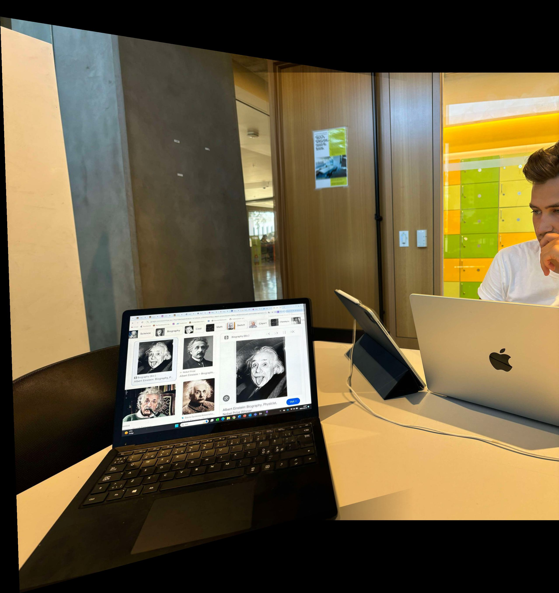
Mosaic of a group room (Notice artifacts)
10.2 Ex 2: Originals and Mosaic (Distance to center based alpha blend)

Campus left side
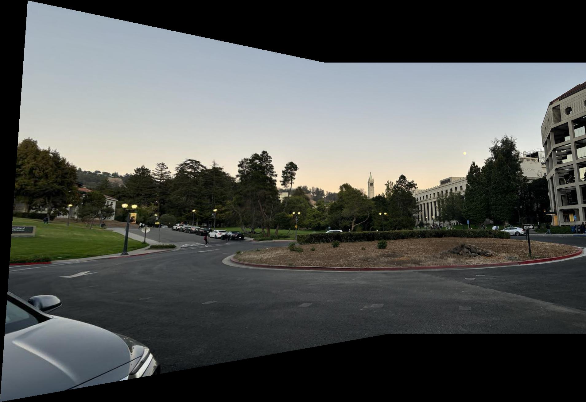
Mosaic with alpha blend based on distance to centers (No artifacts)
10.3 Ex 3: Originals and Mosaic (Distance to center based alpha blend)
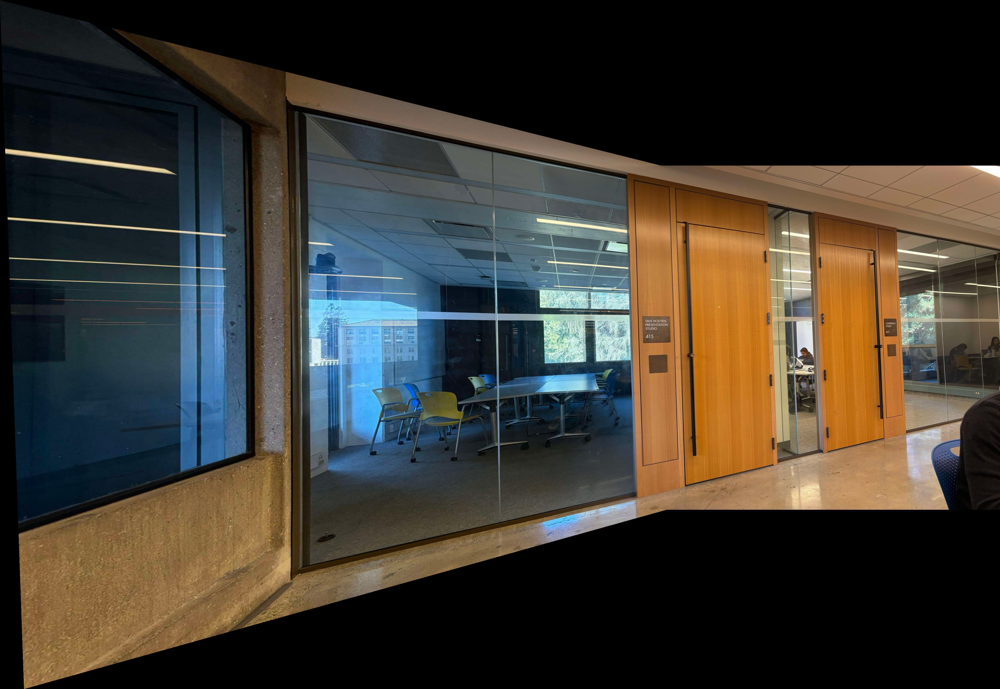
Mosaic with alpha blend based on distance to centers (No artifacts)
These mosaics are my results from 4A and I thought it was really cool that we could do this without any type of machine learning our new data. I can't stress enough how important
it is to not alter the center of projection when taking the photos or not picking pixel perfect correspondences. I had to do this in order to get good results I noticed after a lot
of frustration. I look forward to doing this without manually annotating the points :D
11. Harris Corners
Harris corner detection is a fundamental technique for identifying corner-like features in an image. Corners are regions where intensity changes significantly in multiple directions, making them ideal for tracking and matching in computer vision tasks. The Harris corner detector computes the gradient of the image in both x and y directions, forming a structure tensor at each pixel. This tensor captures how much the intensity changes in each direction, allowing us to compute a corner response function to detect corners.
Mathematically, the corner response \( R \) is defined as:
\[
R = \det(\mathbf{M}) - k \cdot (\text{trace}(\mathbf{M}))^2
\]
Here, \( \mathbf{M} \) is the structure tensor formed from the image gradients, and \( k \) is a sensitivity factor.
Below is an example of Harris corner detection applied to an image.
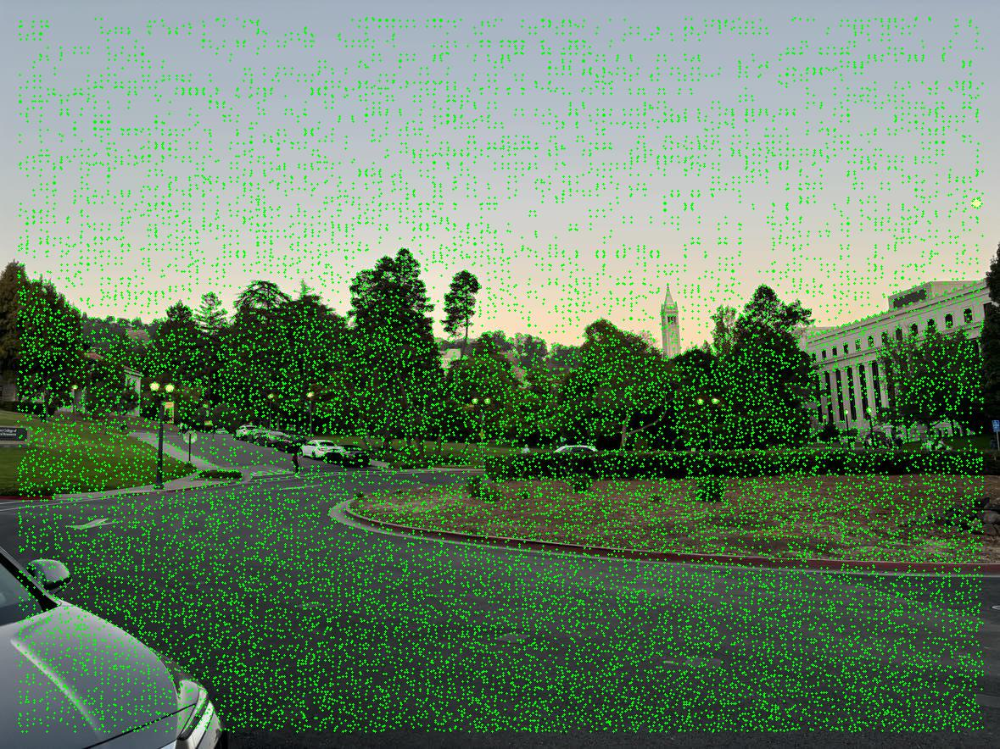
All Harris Corners detected in an image.
12. Adaptive Non-Maximal Suppression
After detecting corners, not all of them are equally important or distinctive. To reduce redundancy, we apply Adaptive Non-Maximal Suppression (ANMS). ANMS helps retain only the most salient features by selecting corners that are stronger than their neighbors within a specified radius. This ensures an even distribution of keypoints across the image, which improves the robustness of matching and other subsequent tasks.
The suppression radius for each corner is computed based on the strength of its response and the distance to stronger nearby corners, ensuring that only distinctive and well-separated keypoints are retained.
Below is an image showing the result of applying ANMS to a set of detected Harris corners.
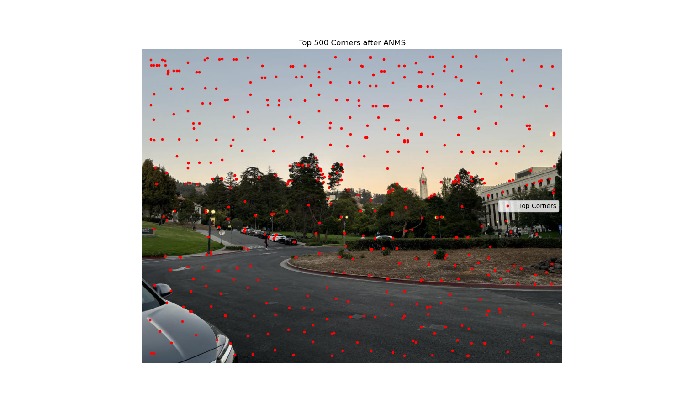
Corners after applying Adaptive Non-Maximal Suppression.
13. Feature Descriptor Extraction
Once we have detected keypoints, the next step is to extract feature descriptors. For each keypoint, we extract an axis-aligned 8x8 patch of pixels around it. However, instead of taking this patch directly, we sample it from a larger 40x40 window. Sampling from a larger window allows us to first gaussian blur the patch then downscale it to 8x8, which creates a descriptor that is more robust to small changes in scale, orientation but also differences in lightintenisties.
It's crucial to bias and gain-normalize the descriptor. Bias normalization ensures that the descriptor has zero mean, removing the effect of overall intensity changes, while gain normalization scales the descriptor so that it has unit variance, ensuring that the descriptor is not dominated by contrast variations. By doing all of the above we create a higher chance of getting matches which are correct even though
there is some light intensity change or orientation change.
Below are two images of normalized 8x8 patches for two images, note these are not the pairs but the strongest harris corners. Notice that they have a lot of white and black in them due to clipping of the values. Since we made the patches zero mean they will have negative values which will come out as black when shown.
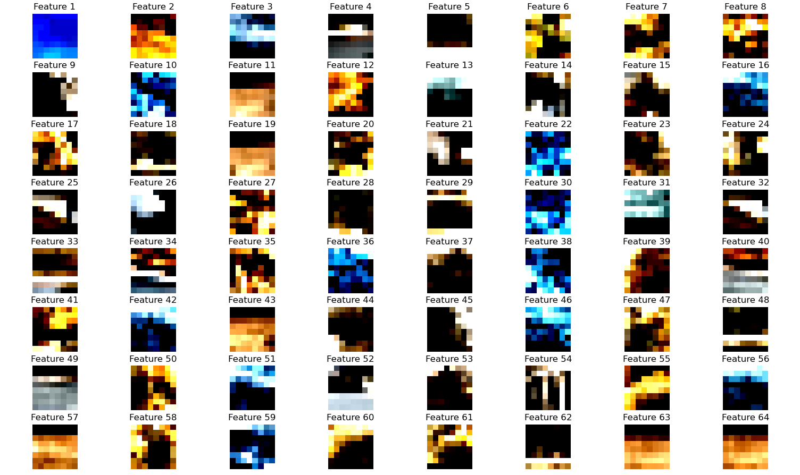
64 first features from first image
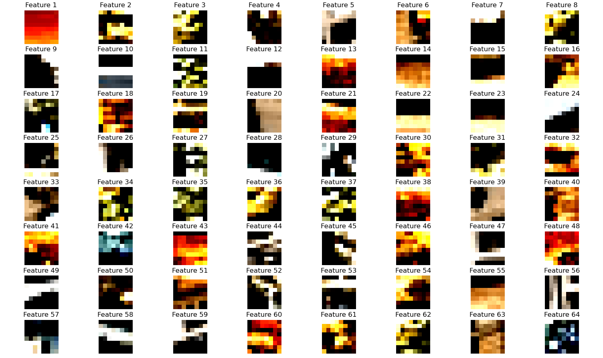
64 first features from second image
14. Feature Matching
After extracting descriptors, the next step is to match features between two images. To do this, we compare each descriptor in the first image with every descriptor in the second image, identifying the pairs of descriptors that are most similar. The similarity between descriptors is usually measured using the Euclidean distance.
To ensure robust matching, we use Lowe’s ratio test. For each descriptor in the first image, we find its two nearest neighbors in the second image. We accept the match only if the distance to the closest neighbor is significantly smaller than the distance to the second closest neighbor, as this indicates that the match is unambiguous. The threshold ratio is typically set around 0.8.
Below is an image showing matched features between two images after applying Lowe's ratio test, notice that many of the matches are correct but there are still some which would affect the homography negatively. In the next section I explain how we get rid of these outliers.
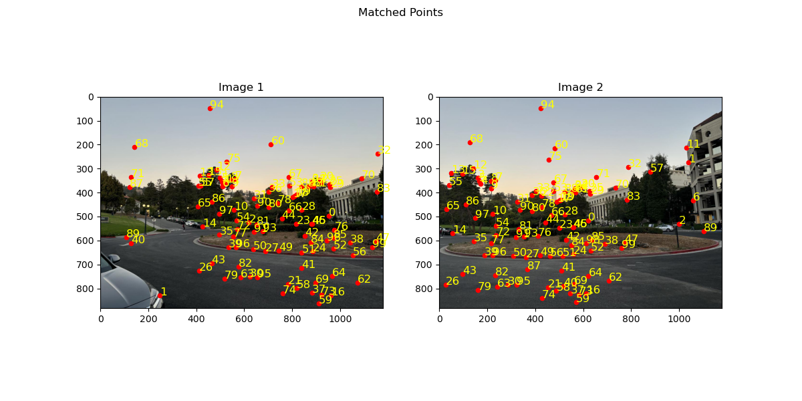
Matched features after applying Lowe's ratio test.
15. RANSAC for Outlier Removal
Even with the best matching techniques, there may still be incorrect matches, or outliers, that could distort the final result. To remove these outliers, we use RANSAC (Random Sample Consensus). RANSAC is an iterative method that repeatedly selects a random subset of four matches, computes a homography based on that subset, and then tests how well the homography aligns with the rest of the matches.
Matches that do not fit well with the computed homography are considered outliers and matches which are within a 1 pixel radiues are considered correct and are considered inliers. We do this process a number of times and record the which are inliers and the amount of them. The largest list of inliers is then used to compute the final homography matrix as in part A, i.e with more than 4 points and we
take the least square in order to get a robust and well working result.
Below is an image showing feature matches after RANSAC. Compare it with the above and see that now we do not have any outliers which will result in a correct Homography matrix.
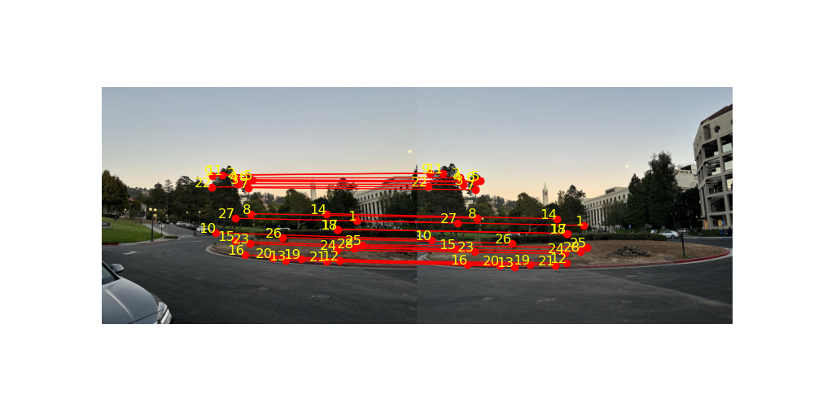
Feature matches after RANSAC.
16. Results
Below are the results of creating auto-mosaics. In each row, the first two images are the input images used to generate the mosaic, and the third image shows the final mosaic. The process includes detecting keypoints, extracting descriptors, matching features, and applying homography to stitch the images together with a nice alpha blend.
Input Image 1 (Left).
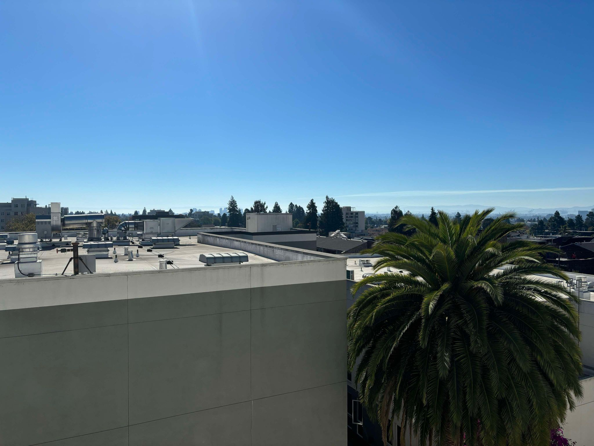
Input Image 2 (Left).
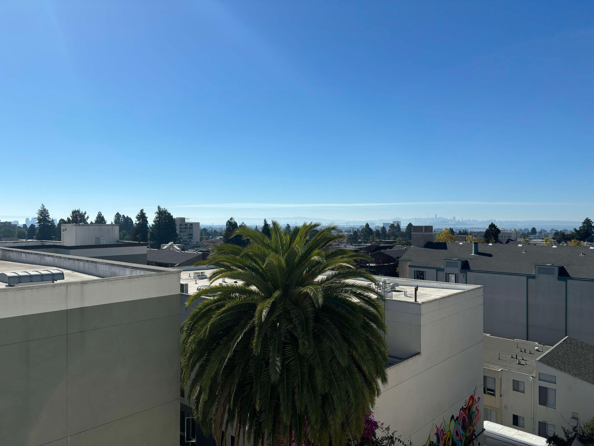
Input Image 2 (Right).
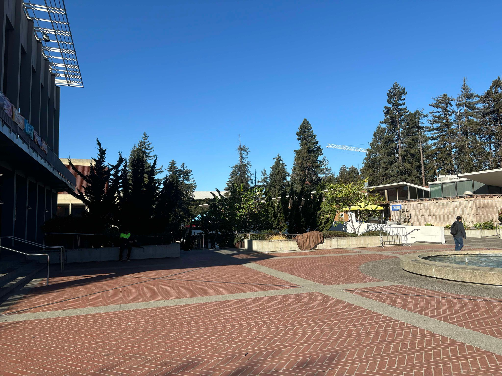
Input Image 3 (Left).
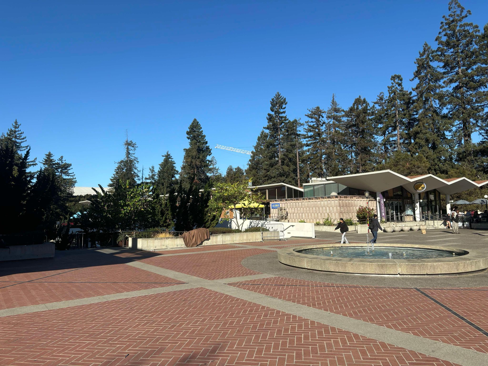
Input Image 3 (Right).
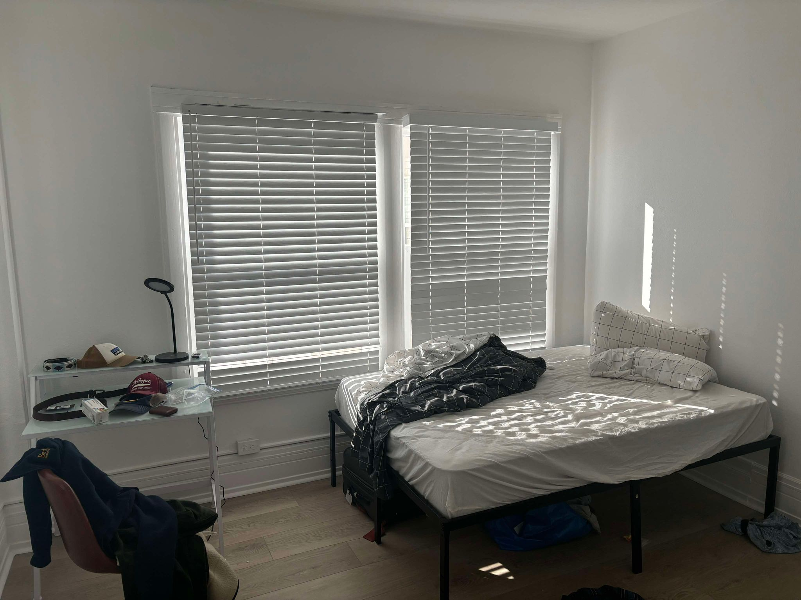
Input Image 4 (Left).
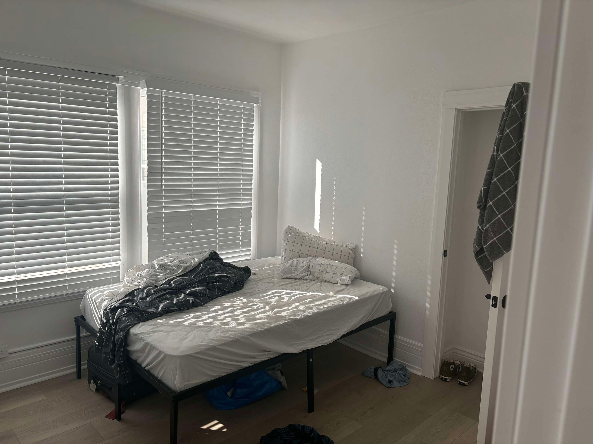
Input Image 4 (Right).
Input Image 5 (Left).
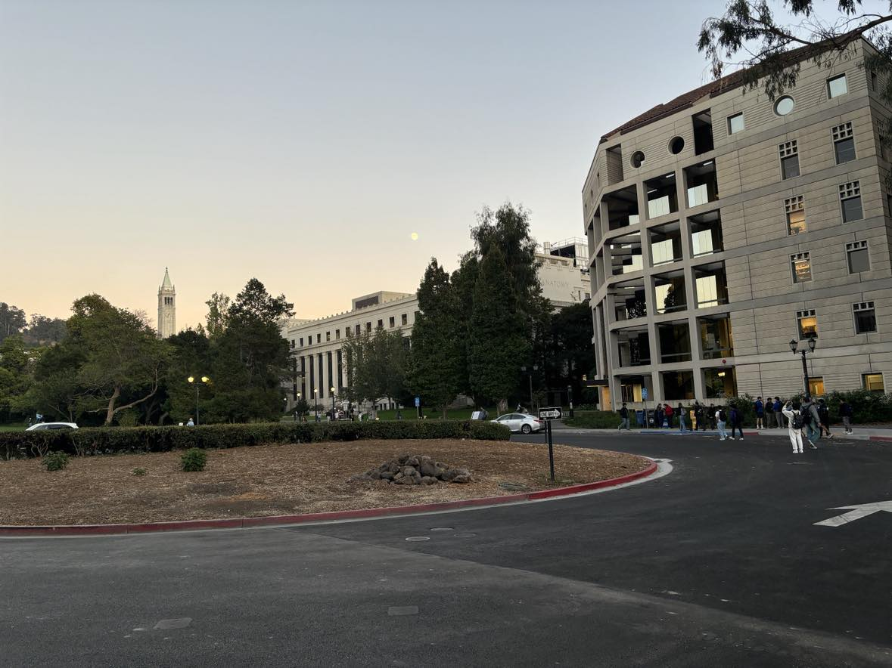
Input Image 5 (Right).
These results demonstrate the effectiveness of the auto-mosaic generation process, showing accurate alignment and blending of images to create smooth and continuous mosaics. The last image show a mosaic with much less overlap than the others
which I thought would be fun to try and it worked well. I also tried taking the images a bit more sloppy without a hyperfixed center of projection to see the results this can be seen in the second last mosaic. Notice how it is a little bit blurry.
Probably due to the fact that a simple translation is not good enough for alignment when the COP is changed between the images. All and all a very fun project, still amazed how simple these operations are and yet they produce so cool results. My final function
just took two images no other adjustable paramaters and spat out a mosaic which was alos pretty cool.